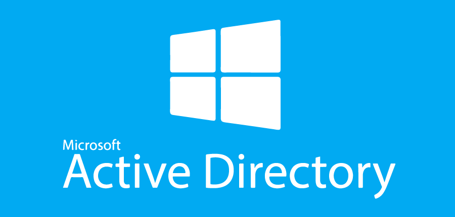
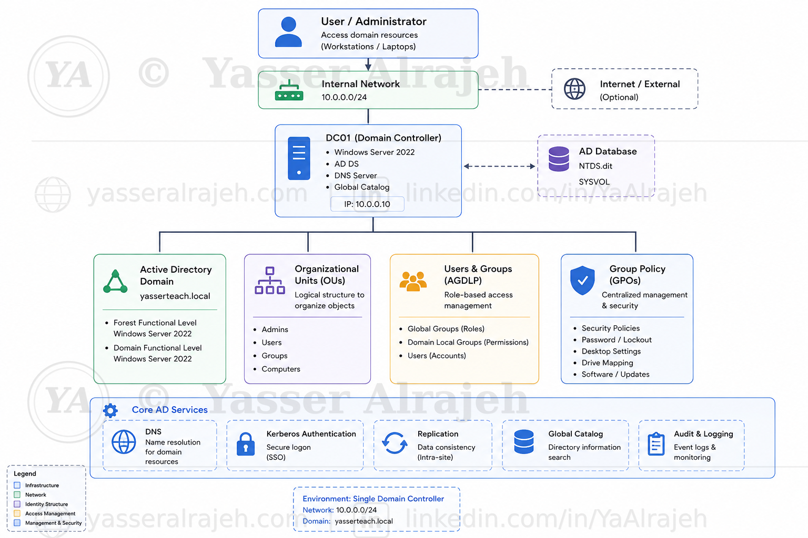

Active Directory Identity, Access & File Services

| Project Category | Identity and Infrastructure Services |
| Platform | Microsoft Windows Server 2022 |
| Core Technologies | Active Directory DS, DNS, Security Groups, AGDLP, SMB, NTFS, PowerShell |
| Project Focus | Centralized identity, role-based access control, and secure departmental resource permissions |
Project Overview
This project demonstrates the deployment of a Microsoft Active Directory identity and access environment using Windows Server 2022 in a controlled virtual lab.
The implementation extends beyond a basic domain installation by combining Active Directory Domain Services, integrated DNS, a structured Organizational Unit design, departmental user administration, Security Groups, the AGDLP authorization model, SMB file sharing, NTFS permissions, and PowerShell automation.
The primary goal is to show how centralized identity and group-based authorization can be used to manage users and departmental resources without assigning permissions directly to individual accounts. This produces a cleaner access model that is easier to maintain, audit, and scale as the environment grows.
1. Business Scenario
A fictional organization requires centralized identity management for multiple departments while maintaining consistent authentication, structured administration, and controlled access to shared resources.
Active Directory Domain Services was selected to centralize user and computer identities, while Security Groups and the AGDLP model were used to separate organizational roles from resource permissions.
The solution provides centralized authentication and authorization, department-based administration, group-based access control, PowerShell automation, SMB file sharing, and NTFS permission management.
2. Project Objectives
Deploy a new Active Directory forest named yasserteach.local.
Configure DC01 as the Domain Controller and DNS Server.
Design a scalable Organizational Unit hierarchy.
Create and organize departmental user accounts.
Implement Global and Domain Local Security Groups.
Apply the AGDLP access model.
Configure centralized SMB file sharing and NTFS permissions.
Apply least-privilege access to departmental resources.
Automate repeatable administration tasks with PowerShell.
Validate identity, group membership, DNS, and resource access.
3. Project Environment
| Component | Configuration |
| Hypervisor | VMware Workstation |
| Server OS | Windows Server 2022 |
| Client OS | Windows 11 |
| Forest / Domain | yasserteach.local |
| Domain Controller | DC01 |
| DNS Server | DC01 |
| Client Computer | W11-01 |
| Authentication | Kerberos / Active Directory |
| File Sharing | SMB |
| Access Control | Security Groups, AGDLP, NTFS |
| Automation | Windows PowerShell |
4. Project Architecture
The architecture below summarizes the single-domain Active Directory environment, including DC01, DNS, the directory database, organizational structure, users and groups, Group Policy, authentication, and core directory services.

Active Directory architecture for the yasserteach.local lab, showing DC01 and the core identity, access, DNS, authentication, directory, and management components.5. Infrastructure Deployment
This phase establishes the foundation of the lab: virtual networking, Windows Server preparation, static network configuration, AD DS installation, DNS integration, and creation of the yasserteach.local forest.
5.1 Virtual Network Infrastructure

The project began by configuring an isolated virtual network in VMware Workstation. The lab network allows the Domain Controller and Windows client to communicate within a controlled environment without depending on an external DHCP service.
The core systems connected to this network are DC01 and W11-01. This provides predictable control over IP addressing, DNS resolution, and Active Directory communication.
5.2 Windows Server Preparation

After installing Windows Server 2022, the initial server configuration was reviewed in Server Manager before installing directory services.
Computer information
Windows Update status
Time configuration
Network adapter status
Remote management
5.3 Server Naming and Static Network Configuration

The default Windows Server computer name was replaced with DC01, using a role-based naming convention that makes the server's purpose immediately recognizable.
| System | Purpose |
| DC01 | Domain Controller / DNS Server |
| W11-01 | Domain Client |

Before deploying Active Directory, DC01 was configured with a static IPv4 address. Stable addressing is important for infrastructure services because domain clients must be able to locate DNS and the Domain Controller consistently.
The server configuration included the IPv4 address, subnet mask, gateway as required by the lab network, and a DNS configuration that resolves through the Domain Controller.

The ipconfig /all command was used to verify the server name, IPv4 configuration, subnet, DNS settings, and active network adapter before Active Directory deployment.
5.4 Active Directory Domain Services and DNS Deployment

The Active Directory Domain Services (AD DS) role was installed first through Server Manager. During the subsequent Domain Controller promotion, DNS Server was selected and configured as part of creating the new forest. Active Directory relies on DNS service records to allow domain members to locate Domain Controllers and directory services.
| Role | Purpose |
| Active Directory Domain Services | Directory and identity services |
| DNS Server | AD-integrated name resolution and service discovery |

After the AD DS role was installed, DC01 was promoted to a Domain Controller. The promotion process configured the Active Directory database, SYSVOL, authentication services, Global Catalog functionality, and the components required for directory operations and future replication.
DC01 then became responsible for domain authentication, Kerberos, LDAP directory access, Group Policy processing, and DNS integration.

A new forest named yasserteach.local was created, making it the root domain of the lab's Active Directory environment. The deployment established the directory namespace, Active Directory database, authentication services, DNS integration, and the forest security boundary.

Before installation completed, the Active Directory configuration wizard performed prerequisite checks to identify blocking issues with networking, DNS, or required dependencies. The validation completed without blocking errors, allowing the Domain Controller promotion to continue.

After the automatic restart, DC01 started as the Domain Controller for yasserteach.local. Active Directory, DNS, and authentication services were then verified before proceeding with directory design.
6. Active Directory Organizational Design
The next phase focused on building a structured OU hierarchy instead of leaving administrative objects in default containers. The objective was to make user administration, Group Policy targeting, and future delegation easier to manage.
6.1 Organizational Unit Structure

Active Directory Users and Computers (ADUC) was used as the primary graphical console for creating and organizing OUs, users, and Security Groups. PowerShell was used alongside the GUI for repeatable administrative tasks. Using both methods demonstrates day-to-day administration through the graphical interface while also showing how routine changes can be standardized and automated.


A top-level Organizational Unit named Corporate was created as the administrative root for the organization's business structure. This separates managed objects from default Active Directory containers and provides a clean location for department-based administration. The design also prepares the directory for future Group Policy targeting and delegated administration without having to reorganize the entire environment later.

| Organizational Unit |
| Corporate |
| IT |
| HR |
| Finance |
| Operations |
| Executives |
The departmental structure provides clear administrative boundaries and supports targeted management as the environment grows. Users can be managed according to business function, while policies and delegated responsibilities can be scoped to the appropriate OU instead of being applied broadly across the domain.
6.2 User Provisioning and Directory Organization

User accounts were created for the departments in the lab and placed in their corresponding OUs. These accounts authenticate centrally through Active Directory rather than through standalone local Windows accounts. Centralized identities make it possible to manage authentication, group membership, password settings, and resource access from one directory service.

Users were organized according to business function so that future policies, delegated administration, and access control could be applied consistently by department. This structure also makes account reviews easier because administrators can quickly identify which users belong to each organizational area.

PowerShell was used to automate repeatable user provisioning instead of creating every account manually. Automation reduces repetitive GUI work, applies the same naming and account settings consistently, and lowers the chance of configuration differences between users created at different times.
PowerShell Cmdlets Used
New-ADUserSet-ADUserEnable-ADAccount

The resulting directory contained departmental user accounts organized beneath the Corporate hierarchy and prepared for Security Group membership. At this stage, the identity structure was complete enough to move from account organization to role-based authorization.

A final directory review confirmed that the OU and user structure matched the intended design and was ready for group-based authorization. The review verified that departmental accounts were located in the correct OUs and that the hierarchy remained clear before Security Groups and resource permissions were introduced.
6.3 Organizational Structure Summary
| Component | Status |
| Corporate OU | ✅ Created |
| IT OU | ✅ Created |
| HR OU | ✅ Created |
| Finance OU | ✅ Created |
| Operations OU | ✅ Created |
| Executives OU | ✅ Created |
| Enterprise Users | ✅ Created |
| PowerShell User Provisioning | ✅ Completed |
| Organizational Hierarchy | ✅ Validated |
7. Security Groups and Role-Based Access Control
Departmental Global Security Groups were created to represent organizational roles. This group-based model reduces direct permission assignments and prepares the directory for AGDLP.
7.1 Global Security Groups and Membership


| Security Group | Department |
| GG_IT | Information Technology |
| GG_HR | Human Resources |
| GG_Finance | Finance |
| GG_Operations | Operations |
| GG_Executives | Executive Management |
The GG prefix identifies each object as a Global Group and makes the naming convention easier to understand during administration and troubleshooting. These Global Groups represent business roles, so users are grouped according to department before any resource-specific permission is assigned.

Users receive access according to departmental membership rather than through individually managed folder permissions. For example, IT users are members of GG_IT, while Finance users are members of GG_Finance. This approach supports simpler onboarding, offboarding, auditing, and permission changes because access can be changed by updating group membership rather than editing multiple folder ACLs for individual accounts.


IT users → GG_IT
HR users → GG_HR
Finance users → GG_Finance
Operations users → GG_Operations
Executive users → GG_Executives
For scalable administration, resource permissions are assigned to Security Groups rather than maintained individually for each user account. This separation between user identity and resource authorization keeps the access model easier to review and reduces the number of direct ACL entries administrators need to maintain.

The completed Global Group structure represented the five departmental roles used throughout the lab and served as the identity layer of the AGDLP model.
7.2 PowerShell Group Administration

PowerShell was used to automate group membership with Add-ADGroupMember, reducing repetitive GUI work and improving consistency. The same approach can be reused whenever users are onboarded or transferred between departments, making group administration faster and less error-prone.

Departmental memberships were reviewed after automation to confirm that each account inherited access through the intended role group. This validation was important because the later AGDLP design depends on accurate Global Group membership at the identity layer.
7.3 Domain Local Resource Groups


Domain Local Security Groups were introduced as the permission layer for departmental resources. A consistent naming convention was used:
| Prefix / Suffix | Meaning |
| GG | Global Group |
| DL | Domain Local Group |
| RW | Read / Write access |
For example, DL_Finance_RW represents the Domain Local Group used for Finance read/write access. Unlike Global Groups, which represent users and business roles, Domain Local Groups are used as the resource-permission layer. PowerShell automation was extended beyond user provisioning to group creation, group membership, and AGDLP nesting.
8. File Services and AGDLP Implementation
The next phase applied the AGDLP model to departmental SMB resources. Global Groups represented user roles, while Domain Local Groups represented resource permissions.
8.1 AGDLP Permission Model

| Domain Local Group | Purpose |
| DL_IT_RW | IT Folder — Read / Write |
| DL_HR_RW | HR Folder — Read / Write |
| DL_Finance_RW | Finance Folder — Read / Write |
| DL_Operations_RW | Operations Folder — Read / Write |
| DL_Executives_RW | Executives Folder — Read / Write |

Account ↓ GG_Finance ↓ DL_Finance_RW ↓ Finance Folder ↓ Modify Permission
Finance users are added to GG_Finance. That Global Group is nested into DL_Finance_RW, and the Domain Local Group receives the folder permission. This follows the AGDLP model by separating Accounts, Global Groups, Domain Local Groups, and Permissions into distinct layers. A new Finance employee therefore only needs the correct group membership; the NTFS ACL does not need to be edited for every user, which makes access changes easier to audit and maintain.

Add-ADGroupMember was used to automate the nesting of Global Groups into their corresponding Domain Local Groups. Automating this relationship helps keep the authorization structure consistent across departments and reduces the risk of accidentally assigning a role group to the wrong resource group.
8.2 Departmental File Structure and SMB Sharing

D:\Shares ├── Finance ├── HR ├── IT ├── Operations └── Executives
The folder structure separates departmental data and provides a clear resource target for each Domain Local Group. Each folder represents a distinct business resource, allowing permissions to be mapped cleanly from the departmental role group through the corresponding Domain Local Group.

The departmental repository was published using SMB so authenticated domain users could access shared resources across the lab network. SMB provides the network-access layer, while Active Directory groups and NTFS permissions determine which users are actually authorized to work with each departmental folder.
Share permissions and NTFS permissions work together; the effective network access is constrained by both layers. Detailed departmental authorization in this lab is enforced primarily through the NTFS ACL design.
8.3 NTFS Permissions and Least Privilege

NTFS permissions were assigned to Domain Local Groups instead of individual users. This keeps resource ACLs stable even when employees join, leave, or change departments. Administrators can modify access by changing Active Directory group membership while leaving the resource ACL itself unchanged.

Inheritance was disabled where required so departmental folders could use explicit ACLs appropriate to their access requirements. This provides clearer administrative boundaries and avoids unintended permissions inherited from a parent folder. The resulting ACL is easier to review because the entries shown on the departmental folder directly reflect the intended access model.

DL_Finance_RW was assigned to the Finance folder, completing the Accounts → Global → Domain Local → Permissions flow used by AGDLP. The folder ACL therefore references the resource group rather than individual employees, preserving the separation between organizational membership and resource permissions.

Departmental users were granted Modify rather than unnecessary Full Control. This supports normal file operations such as creating, editing, and deleting permitted content while avoiding administrative rights that are not required for the business task. The decision demonstrates least-privilege access rather than simply granting the broadest permission available.

PowerShell and icacls were used to apply repeatable NTFS permission settings across departmental folders. Using command-line administration also makes the permission configuration easier to reproduce and verify than relying only on manual GUI changes.

The final ACLs were reviewed to verify Domain Local Group assignment, inheritance settings, and Modify access. This validation confirmed that the resource-permission layer matched the intended AGDLP design and that no unnecessary Full Control assignment remained for departmental users.
| AGDLP Layer | Implementation |
| Accounts | Departmental users |
| Global Groups | GG_IT, GG_HR, GG_Finance, GG_Operations, GG_Executives |
| Domain Local Groups | DL_IT_RW, DL_HR_RW, DL_Finance_RW, DL_Operations_RW, DL_Executives_RW |
| Permissions | Modify |
| Resources | Departmental SMB folders |
9. Project Validation and Final Results
The completed lab was validated across identity services, organizational structure, group membership, AGDLP relationships, SMB access, NTFS permissions, and PowerShell automation. The purpose of this final phase was to verify not only that the domain was operational, but also that the identity and permission model worked as one connected design from user account to resource access.
9.1 Active Directory Validation
| Component | Status |
| Forest | ✅ yasserteach.local |
| Domain | ✅ yasserteach.local |
| Domain Controller | ✅ DC01 |
| DNS | ✅ Operational |
| Authentication Services | ✅ Operational |
9.2 Identity and Access Validation
The Corporate, IT, HR, Finance, Operations, and Executives OUs were reviewed and confirmed as part of the implemented hierarchy. User creation, departmental placement, domain authentication, and PowerShell provisioning were validated to confirm that identities were organized correctly before access permissions were evaluated.
Global Group scope, departmental membership, and naming conventions were reviewed to ensure the identity layer of the access model was configured correctly. This ensured that users reached resources through the expected role groups rather than through direct or inconsistent assignments.
User ↓ Global Group ↓ Domain Local Group ↓ Department Folder ↓ Modify Permission
The AGDLP relationship was validated using Finance as the detailed example and applied consistently to the other departmental resources in the lab. The validation confirmed the full path from user account to Global Group, Domain Local Group, and finally the Modify permission on the departmental folder.
9.3 File Services and Automation Validation
The departmental SMB folders and NTFS ACLs were checked to confirm that access was controlled through Domain Local Groups and that unnecessary Full Control permissions were avoided. PowerShell and command-line verification were also reviewed to confirm that the configuration was repeatable and consistent across the departmental resources.
| Administrative Task | Status |
| User Provisioning | ✅ Completed |
| Security Group Creation | ✅ Completed |
| Group Membership | ✅ Completed |
| AGDLP Configuration | ✅ Completed |
| NTFS Permission Automation | ✅ Completed |
9.4 Technologies Used
| Technology | Purpose |
| VMware Workstation | Virtualization |
| Windows Server 2022 | Domain Controller platform |
| Windows 11 | Domain client |
| Active Directory Domain Services | Identity and directory services |
| DNS Server | Name resolution and AD service discovery |
| PowerShell | Administration automation |
| Security Groups / AGDLP | Group-based authorization |
| SMB | File sharing |
| NTFS / icacls | File-system access control and validation |
10. Final Conclusion
The Active Directory Identity, Access & File Services project demonstrates an end-to-end Windows Server lab covering Domain Controller deployment, integrated DNS, OU design, user and Security Group administration, AGDLP, SMB resources, NTFS permissions, least privilege, and PowerShell automation.
The final environment shows how centralized identity and group-based authorization can simplify administration while keeping resource access structured and maintainable. The project provides practical evidence of Windows Server and Active Directory administration skills without presenting the lab as a larger production deployment than it is.